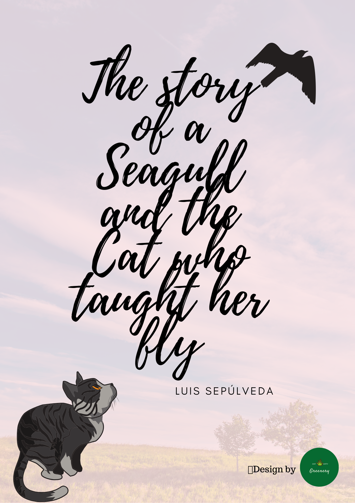

| Home | About Me | Recipes | Blog | Contact |
MY VALUE
 |
Well Being |
|
I was grown up by my beloved mom, who is a pharmacist, so she always cares so much about everyone's health. During my childhood until now, I have also unforternately suffered from a lot of disease that other siblings of mine never have. Therefore, I have learned how to take care of myself since I was a toddler (kidding ;)) I always love cooking and hearing how different people take care themselves with food. Culinary is a magical things which pull people together. To me, it is a non-verbal communication as well. To me, well being is not only about keeping your physical health the best, but also about your mental, emotional and spiritual condition. To all the creatures in this universe, you surely cannot drink from an empty cup. I hope you take good care of your amazing body and soul. |
| Love and Empathy |  |
|
My most favorite book of all the time is "The story of a Seagull and the Cat who taught her fly". The book tells the story just as you can read (hehe). "It is very easy to accept and love those who are like us, but to love someone different is very hard, and you helped us to do that."(Luis Sepúlveda,1996). The Cat(s) had raised the baby Seagull since she was just an egg until she wanted to fly without thinking of traning her to become a cat. Just a small book, not so long, but there are tons of lessons that I have learned from it. Loving and empathizing to those who are not the same to us is what I always want to practice in my life, especially animals and natures which we have always thought different from us. |
| Finally |
|
Here in Greenery, we together share about all the things that makes our lives a little bit more smiley without judgement. We all have the different experience in our lives, which together forms each individual's personality, behaviour and belief. Therefore, I hope you somehow find a place to read and share things with the community. It is okay to feel not agreed, we are all |
| GREENE VU | greenery.savetheearth@gmail.com |